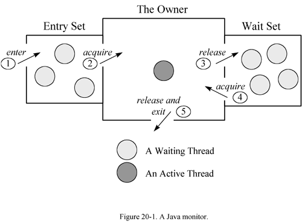

监视器（monitor）
就像每个对象都有一个锁一样，每个对象同时拥有一个由这些方法（wait、notify、notifyAll、Thread、interrupt）管理的一个等待集合。拥有锁和等待集合的实体通常被成为监视器。任何一个对象都可以作为一个监视器。
java Monitor 就像有一间每次之允许一个线程访问的特殊房间的建筑，这个房间里通常会包含一些数据，从这个线程进入这个房间开始到它离开为止，它都有权限访问这个房间的任何数据。进入监视器这个建筑叫做“进入监视器”，进入这个特殊房间叫做“获得监视器”，占据这个房间叫做”持有监视器“，离开这个房间叫做”释放监视器“，离开这个建筑叫做”推出监视器“。

等待/通知机制
等待/通知机制是一种线程间 通信 的机制， 一个线程一旦调用了任意对象的wait()方法，就会变为非运行状态，直到另一个线程调用了同一个对象的notify()方法，这样就完成了两个线程间的交互。
java.lang.Object定义了三个方法：wait()、notify()、notifyAll()来实现该机制。
为了调用wait()或者notify()方法，线程必须获取那个对象的锁。也就是线程必须在同步块里调用wait()或notify()。
notify()和notifyAll()的区别
notify()：线程调用一个对象的notify()方法，正在等待该对象的所有线程中将有 一个 线程被唤醒，最后也只有这个线程执行完，其他依然在wait。
notifyAll()：线程调用一个对象的notifyAll()方法，正在等待该对象的 所有 线程都会被唤醒，但只有一个线程可以退出wait方法（因为要获取锁），但最后所有等待线程都会执行完。
一旦一个线程被唤醒，不会立刻就退出wait()方法调用，要等到调用notify()的线程对出了自己的同步块，也就是说：
被唤醒的线程必须重新获得监视器对象的锁，才可以退出wait()的方法调用，因为wiat方法运行在同步块中。
wait()和sleep()的区别
wait()：来自Object类，只能在同步块(a block synchronized on the monitor object)中调用，一旦线程调用了wait方法，就会释放所持有的监视器对象的锁。
sleep()：来自Thread类，可以在任何地方使用，并且不会释放锁。
例子
/**
* Java Monitor的使用示例（通过wait()、notify()实现线程间通信,实现生产者消费者）
*/
public class JavaMonitor {
public static void main(String[] args) {
class Monitor {
private String temp;
private boolean flag = false;
public synchronized void add(String str) throws InterruptedException {
if(flag){
System.out.println("[add] "+Thread.currentThread().getName()+" wait()");
//当你调用wait或notify时候它首先要检查下当前线程是否是锁(监视器对象的锁)的拥有者，不是则抛出IllegalMonitorStateExcept，
wait();
}
System.out.println("[add] "+str);
this.temp = str;
flag = true;
notify();
}
public synchronized void remove() throws InterruptedException {
if(!flag){
System.out.println("[remove] "+Thread.currentThread().getName()+" wait()");
wait();
}
System.out.println("[remove] "+temp);
this.temp = null;
flag = false;
notify();
}
}
Monitor thing = new Monitor();
Thread thread = new Thread(new Runnable() {
@Override
public void run() {
while (true){
try {
thing.add(UUID.randomUUID().toString());
} catch (InterruptedException e) {
e.printStackTrace();
}
}
}
},"addThread");
thread.start();
Thread thread2 = new Thread(new Runnable() {
@Override
public void run() {
while (true){
try {
thing.remove();
} catch (InterruptedException e) {
e.printStackTrace();
}
}
}
},"removeThread");
thread2.start();
}
}
日期：2013-08-12、2014-06-16、2015-01-08
参考资料：